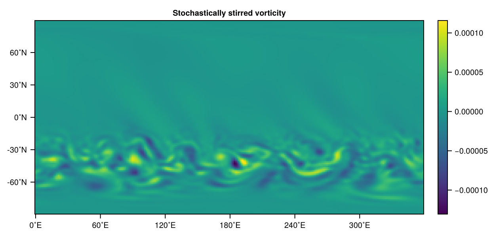

Custom forcing and drag
The following example is a bit more concrete than the previous conceptual example, but we try to add a few more details that are important, or you at least should be aware of it. In this example we want to add a StochasticStirring forcing as defined in Vallis et al., 2004
\[\begin{aligned} \frac{\partial \zeta}{\partial t} &+ \nabla \cdot (\mathbf{u}(\zeta + f)) = S - r\zeta - \nu\nabla^{4}\zeta \\ S_{l, m}^i &= A(1-\exp(-2\tfrac{\Delta t}{\tau}))Q^i_{l, m} + \exp(-\tfrac{dt}{\tau})S_{l, m}^{i-1} \\ \end{aligned}\]
So there is a term S that is supposed to force the vorticity equation in the [Barotropic vorticity model]. However, this term is also stochastically evolving in time, meaning we have to store the previous time steps, $i-1$, in spectral space, because that's where the forcing is defined: for degree $l$ and order $m$ of the spherical harmonics. $A$ is a real amplitude. $\Delta t$ the time step of the model, $\tau$ the decorrelation time scale of the stochastic process. $Q$ is for every spherical harmonic a complex random uniform number in $[-1, 1]$ in both its real and imaginary components. So we actually define our StochasticStirring forcing as follows and will explain the details in second
using SpeedyWeather
@kwdef struct StochasticStirring{NF} <: SpeedyWeather.AbstractForcing
# DIMENSIONS from SpectralGrid
"Spectral resolution as max degree of spherical harmonics"
trunc::Int
"Number of latitude rings, used for latitudinal mask"
nlat::Int
# OPTIONS
"Decorrelation time scale τ [days]"
decorrelation_time::Second = Day(2)
"Stirring strength A [1/s²]"
strength::NF = 2e-11
"Stirring latitude [˚N]"
latitude::NF = 45
"Stirring width [˚]"
width::NF = 24
# TO BE INITIALISED
"Stochastic stirring term S"
S::LowerTriangularMatrix{Complex{NF}} = zeros(LowerTriangularMatrix{Complex{NF}}, trunc+2, trunc+1)
"a = A*sqrt(1 - exp(-2dt/τ)), the noise factor times the stirring strength [1/s²]"
a::Base.RefValue{NF} = Ref(zero(NF))
"b = exp(-dt/τ), the auto-regressive factor [1]"
b::Base.RefValue{NF} = Ref(zero(NF))
"Latitudinal mask, confined to mid-latitude storm track by default [1]"
lat_mask::Vector{NF} = zeros(NF, nlat)
endSo, first the scalar parameters, are added as fields of type NF (you could harcode Float64 too) with some default values as suggested in the Vallis et al., 2004 paper. In order to be able to define the default values, we add the @kwdef macro before the struct definition. Then we need the term S as coefficients of the spherical harmonics, which is a LowerTriangularMatrix, however we want its elements to be of number format NF, which is also the parametric type of StochasticStirring{NF}, this is done because it will allow us to use multiple dispatch not just based on StochasticStirring but also based on the number format. Neat. In order to allocate S with some default though we need to know the size of the matrix, which is given by the spectral resolution trunc. So in order to automatically allocate S based on the right size we add trunc as another field, which does not have a default but will be initialised with the help of a SpectralGrid, as explained later. So once we call StochasticStirring{NF}(trunc=31) then S will automatically have the right size.
Then we also see in the definition of S that there are prefactors $A(1-\exp(-2\tfrac{\Delta t}{\tau}))$ which depend on the forcing's parameters but also on the time step, which, at the time of the creation of StochasticStirring we might not know about! And definitely do not want to hardcode in. So to illustrate what you can do in this case we define two additional parameters a, b that are just initialized as zero, but that will be precalculated in the initialize! function. However, we decided to define our struct as immutable (meaning you cannot change it after creation unless its elements have mutable fields, like the elements in vectors). In order to make it mutable, we could write mutable struct instead, or as outlined here use RefValues. Another option would be to just recalculate a, b in forcing! on every time step. Depending on exactly what you would like to do, you can choose your way. Anyway, we decide to include a, b as RefValues so that we can always access the scalar underneath with a[] and b[] and also change it with a[] = 1 etc.
Lastly, the Vallis et al., 2004 paper also describes how the forcing is not supposed to be applied everywhere on the globe but only over a range of latitudes, meaning we want to scale down certain latitudes with a factor approaching zero. For this we want to define a latitudinal mask lat_mask that is a vector of length nlat, the number of latitude rings. Similar to S, we want to allocate it with zeros (or any other value for that matter), but then precompute this mask in the initialize! step. For this we need to know nlat at creation time meaning we add this field similar as to how we added trunc. This mask requires the parameters latitude (it's position) and a width which are therefore also added to the definition of StochasticStirring.
Custom forcing: generator function
Cool. Now you could create our new StochasticStirring forcing with StochasticStirring{Float64}(trunc=31, nlat=48), and the default values would be chosen as well as the correct size of the arrays S and lat_mask we need and in double precision Float64. Furthermore, note that because StochasticStirring{NF} is parametric on the number format NF, these arrays are also allocated with the correct number format that will be used throughout model integration.
But in SpeedyWeather we typically use the SpectralGrid object to pass on the information of the resolution (and number format) so we want a generator function like
function StochasticStirring(SG::SpectralGrid; kwargs...)
(; trunc, nlat) = SG
return StochasticStirring{SG.NF}(; trunc, nlat, kwargs...)
endMain.StochasticStirringWhich allows us to do
spectral_grid = SpectralGrid(trunc=42, nlayers=1)
stochastic_stirring = StochasticStirring(spectral_grid, latitude=30, decorrelation_time=Day(5))Main.StochasticStirring{Float32} <: SpeedyWeather.AbstractForcing
├ trunc::Int64 = 42
├ nlat::Int64 = 64
├ decorrelation_time::Second = 432000 seconds
├ strength::Float32 = 2.0e-11
├ latitude::Float32 = 30.0
├ width::Float32 = 24.0
├ a::Base.RefValue{Float32} = Base.RefValue{Float32}(0.0f0)
├ b::Base.RefValue{Float32} = Base.RefValue{Float32}(0.0f0)
└── arrays: S, lat_maskSo the respective resolution parameters and the number format are just pulled from the SpectralGrid as a first argument and the remaining parameters are just keyword arguments that one can change at creation. This evolved as a SpeedyWeather convention: The first argument of the generating function to a model component is a SpectralGrid and other keyword arguments specific to that component follow.
Custom forcing: initialize
Now let us have a closer look at the details of the initialize! function, in our example we would actually do
function SpeedyWeather.initialize!( forcing::StochasticStirring,
model::AbstractModel)
# precompute forcing strength, scale with radius^2 as is the vorticity equation
(; radius) = model.spectral_grid
A = radius^2 * forcing.strength
# precompute noise and auto-regressive factor, packed in RefValue for mutability
dt = model.time_stepping.Δt_sec
τ = forcing.decorrelation_time.value # in seconds
forcing.a[] = A*sqrt(1 - exp(-2dt/τ))
forcing.b[] = exp(-dt/τ)
# precompute the latitudinal mask
(; grid) = model.spectral_grid
latd = RingGrids.get_latd(grid)
for j in eachindex(forcing.lat_mask)
# Gaussian centred at forcing.latitude of width forcing.width
forcing.lat_mask[j] = exp(-(forcing.latitude-latd[j])^2/forcing.width^2*2)
end
return nothing
endAs we want to add a method for the StochasticStirring to the initialize! function from within SpeedyWeather we add the SpeedyWeather. to add this method in the right Scope of variables. The initialize! function must have that function signature, instance of your new type StochasticStirring first, then the second argument a model of type AbstractModel or, if your forcing (and in general component) only makes sense in a specific model, you could also write model::Barotropic for example, to be more restrictive. Inside the initialize! method we are defining we can use parameters from other components. For example, the definition of the S term includes the time step $\Delta t$, which should be pulled from the model.time_stepping. We also pull the Grid and its resolution parameter nlat_half (see Grids) to get the latitudes with get_latd from the RingGrids module. Alternatively, we could have used model.geometry.latd which is contains a bunch of similar arrays describing the geometry of the grid we use and at its given resolution.
Note that initialize! is expected to be read and write on the forcing argument (hence using Julia's !-notation) but read-only on the model, except for model.forcing which points to the same object. You technically can initialize or generally alter several model components in one, but that not advised and can easily lead to unexpected behaviour because of multiple dispatch.
As a last note on initialize!, you can see that we scale the amplitude/strength A with the radius squared, this is because the Barotropic vorticity equation are scaled that way, so we have to scale S too.
Custom forcing: forcing! function
Now that we have defined how to create and initialize our new StochasticStirring forcing, we need to define what it actually is supposed to do. For this SpeedyWeather will call the forcing! function within a time step. However, this function is not yet defined for our new StochasticStirring forcing. But if you define it as follows then this will be called automatically with multiple dispatch.
function SpeedyWeather.forcing!(
diagn::DiagnosticVariables,
progn::PrognosticVariables,
forcing::StochasticStirring,
lf::Integer,
model::AbstractModel,
)
# function barrier only
forcing!(diagn, forcing, model.spectral_transform)
endThe function signature (types and number of its arguments) has to be as outlined above. The first argument has to be of type DiagnosticVariables as the diagnostic variables, are the ones you want to change (likely the tendencies within) to apply a forcing. But technically you can change anything else too, although the results may be unexpected. The diagnostic variables contain the current model state in grid-point space and the tendencies (in grid and spectral space). The second argument has to be of type PrognosticVariables because, in general, the forcing may use (information from) the prognostic variables in spectral space, which includes in progn.clock.time the current time for time-dependent forcing. But all prognostic variables should be considered read-only. The third argument has to be of the type of our new custom forcing, here StochasticStirring, so that multiple dispatch calls the correct method of forcing!. The forth argument is of type AbstractModel, so that the forcing can also make use of anything inside model, e.g. model.geometry or model.planet etc. But you can be more restrictive to define a forcing only for the BarotropicModel for example, use $model::Barotropic$ in that case. Or you could define two methods, one for Barotropic one for all other models with AbstractModel (not Barotropic as a more specific method is prioritised with multiple dispatch). The 5th argument is the leapfrog index lf which after the first time step will be lf=2 to denote that tendencies are evaluated at the current time not at the previous time (how leapfrogging works). Unless you want to read the prognostic variables, for which you need to know whether to read lf=1 or lf=2, you can ignore this (but need to include it as argument).
As you can see, for now not much is actually happening inside this function, this is what is often called a function barrier, the only thing we do in here is to unpack the model to the specific model components we actually need. You can omit this function barrier and jump straight to the definition below, but often this is done for performance and clarity reasons: model might have abstract fields which the compiler cannot optimize for, but unpacking them makes that possible. And it also tells you more clearly what a function depends on. So we define the actual forcing! function that's then called as follows
function forcing!(
diagn::DiagnosticVariables,
forcing::StochasticStirring{NF},
spectral_transform::SpectralTransform
) where NF
# noise and auto-regressive factors
a = forcing.a[] # = sqrt(1 - exp(-2dt/τ))
b = forcing.b[] # = exp(-dt/τ)
(; S) = forcing
for lm in eachindex(S)
# Barnes and Hartmann, 2011 Eq. 2
Qi = 2rand(Complex{NF}) - (1 + im) # ~ [-1, 1] in complex
S[lm] = a*Qi + b*S[lm]
end
# to grid-point space
S_grid = diagn.dynamics.a_grid # use scratch array "a"
transform!(S_grid, S, spectral_transform)
# mask everything but mid-latitudes
RingGrids._scale_lat!(S_grid, forcing.lat_mask)
# back to spectral space
(; vor_tend) = diagn.tendencies
transform!(vor_tend, S_grid, spectral_transform)
return nothing
endforcing! (generic function with 1 method)The function signature can then just match to whatever we need. In our case we have a forcing defined in spectral space which, however, is masked in grid-point space. So we will need the model.spectral_transform. You could recompute the spectral_transform object inside the function but that is inefficient.
Now this is actually where we implement the equation we started from in Custom forcing and drag simply by looping over the spherical harmonics in S and updating its entries. Then we transform S into grid-point space using the a_grid work array that is in dynamics_variables, b_grid is another one you can use, so are a, b in spectral space. However, these are really work arrays, meaning you should expect them to be overwritten momentarily once the function concludes and no information will remain. Equivalently, these arrays may have an undefined state prior to the forcing! call. We then use the _scale_lat! function from RingGrids which takes every element in the latitude mask lat_mask and multiplies it with every grid-point on the respective latitude ring.
Now for the last lines we have to know the order in which different terms are written into the tendencies for vorticity, diagn.tendencies.vor_tend. In SpeedyWeather, the forcing! comes first, then the drag! (see Custom drag) then the curl of the vorticity flux (the vorticity advection). This means we can transform S_grid directly back into vor_tend without overwriting other terms which, in fact, will be added to this array afterwards. In general, you can also force the momentum equations in grid-point space by writing into u_tend_grid and v_tend_grid.
Custom forcing: model construction
Now that we have defined a new forcing, as well as how to initialize it and what it is supposed to execute on every time step, we also want to use it. We generally follow other Examples, start with the SpectralGrid and use that to get an instance of StochasticStirring. This calls the generator function from Custom forcing: generator function. Here we want to stir vorticity not at the default latitude of 45N, but on the southern hemisphere to illustrate how to pass on non-default parameters. We explicitly set the initial_conditions to rest and pass them as well as forcing=stochastic_stirring on to the BarotropicModel constructor. That's it! This is really the beauty of our modular interface that you can create instances of individual model components and just put them together as you like, and as long as you follow some rules.
spectral_grid = SpectralGrid(trunc=85, nlayers=1)
stochastic_stirring = StochasticStirring(spectral_grid, latitude=-45)
initial_conditions = StartFromRest()
model = BarotropicModel(spectral_grid; initial_conditions, forcing=stochastic_stirring)
simulation = initialize!(model)
run!(simulation)
# visualisation
using CairoMakie
vor = simulation.diagnostic_variables.grid.vor_grid[:, 1]
heatmap(vor, title="Stochastically stirred vorticity")
Yay! As you can see the vorticity does something funky on the southern hemisphere but not on the northern, as we do not force there. Awesome! Adding new components other than forcing works surprisingly similar. We briefly discuss how to add a custom drag to illustrate the differences but there are not really many.
Custom drag
From the barotropic vorticity equation in Custom forcing and drag we omitted the drag term $-r\zeta$ which however can be defined in a strikingly similar way. This section is just to outline some differences.
SpeedyWeather defines AbstractForcing and AbstractDrag, both are only conceptual supertypes, and in fact you could define a forcing as a subtype of AbstractDrag and vice versa. So for a drag, most straight-forwardly you would do
struct MyDrag <: SpeedyWeather.AbstractDrag
# parameters and arrays
endthen define the initialize! function as before, but extend the method drag! instead of forcing!. The only detail that is important to know is that forcing! is called first, then drag! and then the other tendencies. So if you write into vor_tend like so vor_tend[1] = 1, you will overwrite the previous tendency. For the forcing that does not matter as it is the first one to be called, but for the drag you will want to do vor_tend[1] += 1 instead to accumulate the tendency. Otherwise you would undo the forcing term! Note that this conflict would be avoided if the forcing writes into vor_tend but the drag writes into u_tend_grid.
In general, these are the fields you can write into for new terms
vor_tendin spectral spacediv_tendin spectral space (shallow water only)pres_tendin spectral space (shallow water only)u_tend_gridin grid-point spacev_tend_gridin grid-point space
These space restrictions exist because of the way how SpeedyWeather transforms between spaces to obtain tendencies.